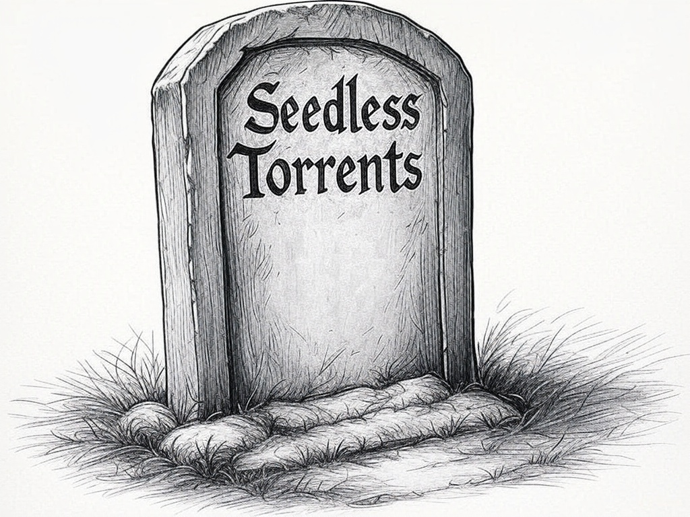

I have had this idea brewing in some form for around 20 years, so I decided I needed to fully explore it. With AI where it is, it was much easier for me to take a stab at it and build a proof of concept.
The basic idea was akin to a video game style random world generator, but for pieces of files. This would allow you to place a “seed” into the generator / algorithm and get back the piece of data you put in.
One of the best practical use cases I had for this was “seedless” torrents (probably better described as peerless), where you only needed the torrent file, and no peers, to “generate” the data.
Ultimately what happened in all my prototypes though is that the “seed” for the data is always larger than the data itself because of the sheer volume of possible byte combinations. I thought there may be ways around this, but I was not able to find any myself. Potentially with the right algorithm it may yet be possible. However with AI not so great at math yet, I don't see advanced algorithm creation within reach any time soon. Even then, there are likely practical use hurdles to overcome.
A lot of me thinking this was possible was inspired by the Library of Babel. I started by trying to convert some of the code they have published to work with any piece of data. The code uses a “combination of a linear congruential generator and a mersenne twister (sort of)”. I quickly found that it is the constraints of what they search for that make it a more feasible task. However I did achieve a working version with data, but the bookmarks (the files that contained the seed to reproduce the file) were double the size of the files being tested. Not so great for a bookmark.
I also looked into AES-CTR encryption, Feistel Networks, Hash Function + Counters, Merkel Trees, and more, but my research quickly lead me to keeping the algorithm as simple as possible for troubleshooting. Also not all of those are reversible, which is needed.
I eventually landed on a sequential bit generator, and searching with pattern matching. My implementations were successful... but started failing past 8 bits. The need to cover all bit possibilities gets astronomically big, really fast. I also added in “Grey Code Generation” at some point, but I actually don't remember in what version.
One of my theories that kept me going was that we could optimize later after a prototype was working. Around halfway through I logged the question, “Can the bookmark that represents the data be compressed more than the data itself?” To which the answer at this point is no not with the size of the bookmarks we are dealing with compared the files they represent. This is the main reason this idea is dead (at least for the foreseeable future).
How to work with LLMs to think, as well as produce outcomes.
Never trust the LLM when it tells you something is impossible or infeasible. This is much the same approach I suggest to take in real life when a human tells you that. At first I took the LLM too seriously, during the ideation phase. After awhile I saw I was able to apply basic logic to guide the AI to other solutions that allowed me to continue to move forward.
Verify the code works the way the AI says it will. Only having a basic understanding of code, I can spot some obvious issues, but I get lost when multiple functions and hundreds of lines come into play. I spent a lot of time troubleshooting with the AI only to realize it was not functioning the way it told me it would. Asking it to explain exactly what each piece of code does in detail was a better use of troubleshooting at times.
Sometimes it is better to try and “one-shot” the entire code right away. It is hard to know what you don't know about a project, especially when you don't know the right logic to use or if don't even know better methods exist. However, after you discover those new methods or ideas, it can be better to try and one-shot the idea fresh. For whatever reason I found LLMs sort of get hung up on themselves with a long chat history and just doesn't edit things well. With a fresh start you can edit and go back to the initial prompt many times to see if it can do better with the new method and no chat history.
I learned a lot about perseverance.
I spent several months on this idea, many early mornings, time in airports and precious down time in the evenings, which is a rare gift with kids. I was dedicated to seeing the idea live or die. I could not have arrived at the conclusion of this project without an intense dedication and curiosity.
I protected the idea, but wasted time.
If this idea had worked, I think it had the potential to change the data storage industry, at least to some small degree. At most, I reckoned it could be a billion dollar idea. I only shared it with a handful of people, which was difficult considering how excited I was to be working on it. My plan was to get a proof of concept working, file for a patent, provide open source tools and solutions, and then require a license for corporations to generate income.
If I had shared more of what I was working on with people smarter than me, they probably could have pointed me in the right direction and filled in my knowledge gaps much more quickly. To be fair, I had shared versions of this idea in the distant past and was met with some healthy skepticism. The hardware limits back then were different, and the interactions caused me to shelve the idea. This relates to not letting people tell you things are impossible, but I am sure there is a balance I could have found between the two with a more structured approach.
The best user interfaces provide joy by default.
This is just a personal opinion that was reinforced. When giving thought to the interaction a user would have on the command line, I found the practical need to know where the computer was at in the process of finding a match for a seed. I found that showing the user the information it was crunching was much more exciting than simply waiting an unknown amount of time for the command prompt to appear again or a simple percentage display. I am biased since it was me watching an idea come to life, but if not joy, I still think it allows user appreciation for what all a machine is doing on your behalf. A practical middle ground was a progress bar with live statistics.
If you enjoyed this read, you would probably find my retrospective on Legit Torrents even more enjoyable.
You might also consider signing up for my newsletter where I plan on writing about more tech related things like this.